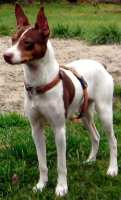

Canis lupus familiaris
El perro (Canis lupus familiaris) es un mamífero carnívoro de la familia de los cánidos, una subespecie del lobo (Canis lupus), que acompaña a los humanos desde hace al menos 14.000 años. Su tamaño, forma y pelaje es muy diverso según la raza. Posee un oído y olfato muy desarrollados. Su vida promedio es de 15 años, aunque las razas pequeñas puede alcanzar una longevidad de 20 años.
Hay aproximadamente 800 razas —más que de cualquier otro animal— que varían significativamente en tamaño, fisonomía y temperamento. Las razas de perros en sentido moderno comenzaron a partir de la precisa documentación de los pedigríes que se establecen en el Kennel Club Inglés en 1873, a imitación de otros registros genealógicos para ganado y caballos.
Yorkshire terrier
 El yorkie se originó en Yorkshire, una región del norte de Inglaterra. A finales de 1865, un perro de exposición llamado Huddersfield Ben —que era un Paisley terrier con tipo de Yorkshire terrier—, propiedad de una mujer que vivía en Yorkshire, Mary Ann Foster, fue visto en las exposiciones caninas en toda Gran Bretaña, y fue quien definió el estándar de la raza denominada Yorkshire terrier. El nombre oficial de la raza se adoptó en 1870.
El yorkie se originó en Yorkshire, una región del norte de Inglaterra. A finales de 1865, un perro de exposición llamado Huddersfield Ben —que era un Paisley terrier con tipo de Yorkshire terrier—, propiedad de una mujer que vivía en Yorkshire, Mary Ann Foster, fue visto en las exposiciones caninas en toda Gran Bretaña, y fue quien definió el estándar de la raza denominada Yorkshire terrier. El nombre oficial de la raza se adoptó en 1870.

Dogo alemán
El término alemán Dogge se aplicaba antiguamente a los perros grandes y fuertes que no pertenecían necesariamente a una raza en particular. En 1880, durante una exposición llevada a cabo en Berlín, se estableció el primer estándar para el dogo alemán. Este ha sido controlado por el Deutscher Doggen-Club 1888 e.V y alterado en algunas ocasiones a través de los años. La versión actual se conforma al modelo de la Federación Cinológica Internacional.
Perro ratonero valenciano
Es una raza canina originaria de la Comunidad Valenciana, donde ya en el siglo XVI existía el Perro de la Huerta.

En 1994 se presentaron 23 ejemplares en la Exposición canina de Valencia, en busca del reconocimiento oficial de la raza, lo que ocurrió en 2004, cuando la Asociación Nacional del Gos Rater Valencià abrió los registros iniciales de la raza.
Datos obtenidos en Wikipedia
Última modificación: 10 de noviembre de 2015